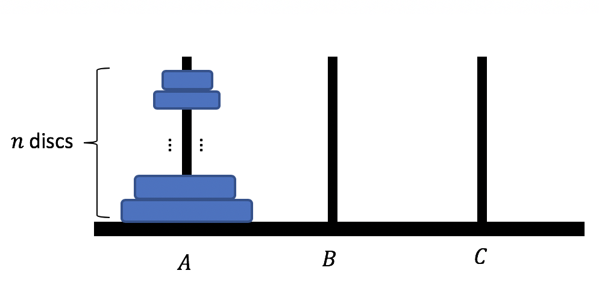

Recursion
Please again read carefully what is stated in this disclaimer before continuing on with your reading.

Iteration vs Recursion
A computer is able to perform tasks that are repetitive - and that is what makes it very efficient. But there are two types of repetition: one is using iterative code, while the other is using recursive. While in iteration, the program would use loops to execute some code that needed to be repeated (such as
for and while loops that you see often in programming languages like Java), this is not the case for recursive programs.
Recursive programs perform tasks also repeatedly but in an entirely different technique. This is how it works: a recursive method will call a smaller instance of itself in order to complete a task, and then that smaller instance would have to call another instance of itself in order to complete its task. So notice the pattern recursion is taking. This recursive process will have to continuously calling smaller instances of itself until it hits what we call the base case, where at this point: the program should stop calling a smaller instance of itself and return some value. So I present to you an example of a recursive algorithm:
Algorithm recFac(int n)
begin
if (n == 0), then:
return 1
else:
return n * recFac(n-1)
endAlgorithm
And now, we compare this famous recursive factorial algorithm with its iterative counterpart:
Algorithm iterFac(int n)
begin
fac ← 1
for 1 to n; do:
fac ← fac * i
return fac
endAlgorithm
Notice the difference. In the first version, we make recursive calls to the method itself. In the second version, we use a control structure (the
for loop) for it to perform its repetitive algorithm.
So which to use? Both have its own pro and con, just depending on the use. There are some algorithms that turn out to be messier if done iteratively. Then there are those that have a worse runtime efficiency when done recursively. For example, if we are given an array of integers \(A\) and we wish to look for the largest number in this array, then a simple iterative method can be written for the
maxInt(int[] A) algorithm. We only write a simple iteration method here for elegance and simplicity. But suppose you would like to search if a certain key \(k\) exists in some binary search tree \(T\), then it would be more appropriate to use a recursive method. This way, not only will the code be more elegant and less messy, but runtime would be shaved off by a logarithmic factor (due to the nature of restrictions of a BST), thus having a faster runtime.
Structure of Recursion
Let us again study the recursive version of the factorial example:
Algorithm recFac(int n)
begin
if (n == 0), then:
return 1
else:
return n * recFac(n-1)
endAlgorithm
In any recursive method, there must always be a:
- Base Case - the recursive call should always end with a terminal call, should be a value
- Recusive Call - call should be calling the method itself, but uses a parameter of a smaller instance
And yes, it is that simple! But, we must take note of some possible pitfalls and common mistakes programmers make when implementing recursive algorithms.
- There must always be a base condition! Forgetting the base case would cause an infinite recursive call. And since recursion is implemented through a stack "under the blackbox", then failing to include a terminating case causes a stack overflow error.
- The base case should not involve more recursion. Again, it should return a value. In our example above, if line 4 calls for another instance of
recFac(), then that is an incorrect way of implementing recursion. - The input must converge towards the base case. If for example, you have
return n * recFac(n+1)in line 6 of the above code, then input will not be converging towards the base case. It instead will be moving away from it (since our \(n\) is some positive value and our base case is \(0\)) and hence will not reach the terminating point.
Linear Recursion
The factorial example above is linear because only one recursive call has been made per stack frame. This produces \(n\) recursive calls, so its runtime complexity is \(O(n)\). Here's another example. Given two integers \(x\) and \(n\), we use the recursive algorithm below to compute \(x^n\).
Algorithm power(int x, int n)
begin
if (n == 0), then:
return 1
else:
return x * power(x, n-1)
endAlgorithm
Again, this is another example of a linear recursion because of the same reason as for the recursive factorial. Similarly, the method above should also run in \(O(n)\) time. But can we do better?
Yes! The method below is a better way (better in a sense of running time). Compared to the first version of the
power(int x, int n), this second version shaves off only a part of what needs to be executed, and then squares it to calculate the remaining part. So for example, to compute for \(x^6\), then it is only necessary to compute for \(x^3\) and then multiplying this result to itself (squaring) - which actually turns out to be faster! If the exponent turns out to be odd, like \(x^7\) for instance, simply calculate \(x^3\), then multiply this result to itself and then multiply by \(x\).
Algorithm powerSquare(int x, int n)
begin
if n == 0, then: //base case
return 1
if n % 2 == 1, then: //odd exponent
y ← powerSquare(x, (n-1)/2)
return x * y * y
else: //even exponent
y ← powerSquare(x, n/2)
return y * y
endAlgorithm
A subtype of linear recursion, called Tail Recursion, occurs when a linearly recursive method makes its recursive call as its last step. A classic example of tail recursion is the method to reverse the elements of an array. So given an integer array \(A\), with \(i\) and \(j\) as its first and last indices respectively, we perform the following algorithm and make a call on
ArrRev(A,0,A.length-1).
Algorithm(int[] A, int i, int j)
begin
if i < j, then:
swap(A[i], A[j])
ArrRev(A, i+1, j-1)
endAlgorithm
Note two things here. One is that the
swap(A[i], A[j]) method in line 4 swaps whatever element is in the \(i\)th position of the array \(A\) with the element in the array's \(j\)th position. (i.e. Simply assume a method for such already exists). Another note here is that the recursive call happens whenever \(i < j\), but where is the base case? This condition only happens as soon as \(i \geq j\).
The next that we take a look at is binary recursion.
Binary Recursion
Unlike linear recursion where we only have one recursive call for a non-base case, this type of recursion uses two. Take for example the classic Fibonacci problem. The Fibonacci sequence is formed by taking the sum of the last two numbers of the sequence, adding them to produce the third. Let the base case be 0 and 1. In mathematical symbols, we define the Fibonacci sequence as:
\(F_0=0\)
\(F_1=1\)
\(F_i=F_{i-1} + F_{i-2}\),
Here is an algorithm for implementing the Fibonacci sequence problem that computes the \(k\)th Fibonacci number given \(k\). This method uses the binary method approach.
Algorithm fib(int k)
begin
if (k < 2), then:
return k
else:
return fib(k-1) + fib(k-2)
endAlgorithm
The problem with this method is that it runs exponentially slow! And the larger input \(k\) that you feed to this program, the slower it would take to compute for the \(k\)th Fibonacci number. Why is this so? Well, imagine if you wish to calculate
fib(8). Then that means you need to calculate the values of fib(7) and fib(6). But then, calculating fib(7) entails calculating fib(6) and fib(5), while calculating fib(6) entails calculating fib(5) and fib(4). Now notice why this bad, You are calculating things multiple times! Take for instance fib(5) here; you need to calculate that in order to obtain
fib(6), and then again to calculate fib(7). You are doing more work than necessary! And this is why this naive version of Fibonacci algorithm is slow and inefficient. But what's a better algorithm then? It's a linear version of the Fibonacci algorithm above!
Algorithm fibLinear(int k)
begin
if k == 1, then:
return (k, 0)
else:
(i, j) ← fib(k-1)
return (i+j, i)
endAlgorithm
This is much better because it did not require more work than necessary. Hence, it is more efficient although this is a linear recursion and not a binary recursion. But on what particular recursive examples can binary recursion be more effective than linear recursion? If the nature of a particular algorithm is said to be arithmetically decreasing (i.e. \(n, n-1, n-2, ...\)) then linear recursion would be better. Applying binary recursion on algorithms such as the Fibonacci problem is exponentially costly due to this, since the Fibonacci sequence decreases arithmetically. But for those problems that require geometric scaling (such as \(n, n/2, n/4, ...\)), then binary recursion would be more appropriate and cheaper runtime. We will be seeing more of binary recursion in the Heaps and Sorting section.
Let us take an example. Given an integer array \(A\), we wish to know if a particular integer \(n\) is contained in the list. To make things more simple, assume that the elements in this array has already been sorted out in an increasing fashion. One way to determine if \(n \in A\) is by splitting the array into two sub-arrays. The first half being numbers smaller than the middle number, and the second half being greater than the middle number (the middle number can either go into the first or second half; it doesn't matter). As the integers are sorted out, we know which among the two sub-arrays can the integer possibly be and the other sub-array will for sure not contain the integer. So imagine if you have the array
A = [2,3,8,9,11] and that your target number to look for is \(3\), then split the array into A1 = [2,3,8] and A2 = [9,11]. We are guaranteed that \(A2\) cannot have the number since our target number \(3\) is not bigger than the middle number \(8\). So we scrap off the second half and consider only the first half. We again do the same process and split the first half of the array into two halves and throw away the sub-array that is guaranteed to not contain the integer. This process repeats itself until there is only one element left in the sub-array, into which we simply just check if that integer is the integer we are looking for. This has a logarithmic runtime and we know that we used a binary recursion, and is an effective method over a linear recursion that runs in linear time. Why? This is because whenever we throw away a sub-array, we are throwing half of what was original. And you always start with half of whatever you are working with until you hit the base case of getting to 1 element left. Here is the pseudocode; make a call on binarySearch(A, n, 0, A.length-1):
Algorithm binarySearch(int[] A, int n, int i, int j)
[Pre-Condition]: Take an integer n and a sorted integer array input A, along with the array's starting index i and ending index j.
[Post-Condition] Output true if n is in A and false otherwise.
begin
if A.length == 1, then: //base case
if A[0] == n, then: return true
else: return false
else:
middleIndex ← A.length/2
if n < A[middleIndex], then: //element in the left half of the sub-array
return binarySearch(A, n, i, middleIndex-1)
else: //element in the right half of the sub-array
return binarySearch(A, n, middleIndex, j)
endAlgorithm
Exercises
Here are some recursion problems to try on.
- Minimum. As mentioned, repetitive programs can either be done iteratively or recursively just depending on the context use and that each way have its own pros and cons. Below is an iterative method for getting the least key \(k\) in a given array \(A\). Write a recursive version for this iterative method. Java code is acceptable but pseudocode is preferred.
Algorithm iterMin(A) begin min ← A[0] x ← 1 while x < A.length, do: if min > A[x], then: min ← A[x] return min endAlgorithm
- Adder and Repeater. Multiplication is also known as "Repeated Addition". For example \(2 \times 3\) is merely \(2 + 2 + 2 = 6\). That said, implement a recursive algorithm for calculating the product of two integers, \(m\) and \(n\) .
- Towers of Hanoi. Let's play a game and here are the rules:
- Imagine you have three pegs, \(A,B,C\), with \(A\) containing \(n\) discs stacked up each other (from smallest on tpp to largest at the bottom) while none in \(B\) or \(C\).
- The goal of the game is to move all the pegs from Peg \(A\) to Peg \(C\) with some restrictions.
- When moving discs, make sure that no larger disk will be on top of a smaller one. So the final output will be all discs in Peg \(C\) stacked up together with the smallest on top and largest at the bottom.

Leave a Message
Use this message box for any questions, comments, concerns, typos, mistakes, or anything that you want to tell me. I am all ears :D